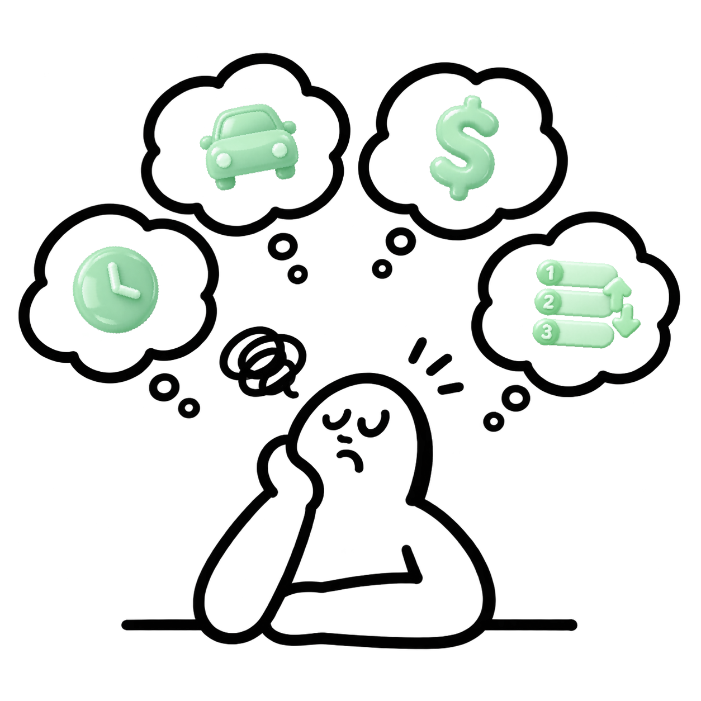
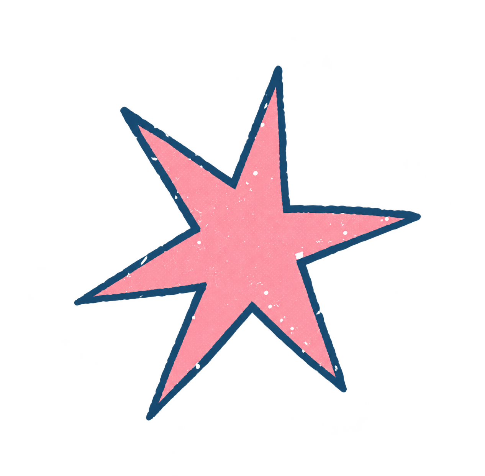
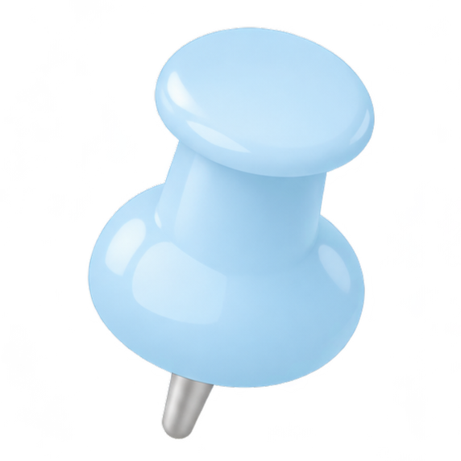

資訊分散
收藏散在截圖、地圖清單或對話紀錄裡，排行程時要重新翻找一次。
收藏 → 整理從收集景點，
到排出可執行的行程。
透過 AI 協助檢查旅行行程的合理性，並提供優化建議，讓旅程規劃更順暢。
旅遊規劃不只是收集感興趣的景點，還需要考慮時間、交通距離、預算與行程順序。當安排不符合實際條件時，使用者往往需要反覆調整，增加規劃負擔。

我設計了 11 題的開放式問卷，請 7 位有自主規劃旅行經驗的人書面回答，再用親和圖整理他們的回答。
收藏散在截圖、地圖清單或對話紀錄裡，排行程時要重新翻找一次。
收藏 → 整理最花時間的不是找景點，而是排行程路線，要反覆評估交通、距離與時間。
規劃 → 可行性
不只要整合收藏資訊，更要協助使用者評估行程的可行性。
我注意到使用者放棄景點不一定代表失去興趣，因此先探索候補機制。隨著問題定義逐漸明確，我把設計重心收斂到行程合理性檢查與 AI 優化建議。
候補機制僅作為初期探索，未納入最終 Prototype。

最終方向AI 行程檢查與優化，是目前 Prototype 的核心。

協助使用者發現潛在規劃問題。
讓調整建議容易理解。
協助使用者判斷是否調整行程。
從匯入收藏開始，到辨識行程中的潛在問題，再透過具體建議重新評估行程。
使用者貼上社群貼文的連結，AI 辨識貼文中提到的景點，直接收藏，不用再手動輸入。
畫面重點：AI 從連結辨識出 2 個景點，標示來源，使用者確認後一次收藏。
細節放大
當行程出現潛在的交通或時間衝突時，系統提供提醒與具體建議，協助使用者理解問題並評估調整方式。
畫面重點：提醒說明前一站的結束時間與交通時間，並提供兩個調整選項。
細節放大
透過 AI 建議的景點安排順序，使用者可以檢視原始規劃與建議結果，重新評估行程動線與安排。套用後可以一鍵復原。
畫面重點：AI 整理出順路動線，並讓使用者選擇「採用建議」或「按原始規劃」。
細節放大
TROVA 已完成 AI 行程檢查與優化的互動原型，並製作可公開瀏覽的 Landing Page。
研究讓我重新理解旅行規劃的問題，除了探索景點，更需要協助使用者衡量現實條件。
AI 的價值不只是提供答案，也在於協助使用者理解行程中的問題，進一步做出判斷。
未來希望透過易用性測試，確認使用者能否理解 AI 的問題提示、優化理由，以及是否能順利完成行程調整。
從察覺補貨需求到完成購買，減少生活中的遺漏與重複溝通。